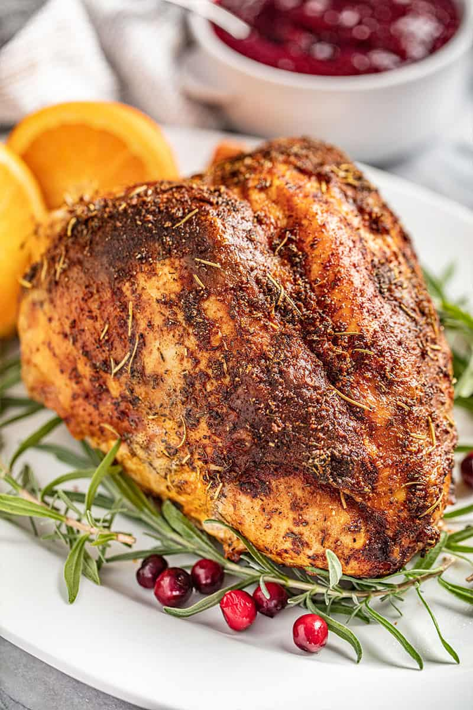

Roasted Turkey Breast

Roasted Turkey Breast
Simple Oven Roasted Turkey Breast is the perfect alternative
to a full size turkey for small families. With its crispy
skin and tender, juicy meat, your whole family is going to
love this one!
Ingredients
- 2 tablespoons olive oil
- 2 teaspoons paprika
- 2 teaspoons dried oregano
- 2 teaspoons dried rosemary minced
- 2 teaspoons salt
- 1 teaspoon dried thyme
- 1 teaspoon black pepper
- 1 teaspoon onion powder
- 1 teaspoon garlic powder
- 3 to 8 pound turkey breast
Instructions
- Preheat oven to 375 degrees. Place turkey breast skin
side up on the rack of a roasting pan, or into a
lightly greased 9x13 pan.
- In a small bowl, stir together olive oil paprika,
oregano, rosemary, salt, thyme, black pepper, onion
powder, and garlic powder to form a paste.
- Loosen the skin with your finger and spoon some of
the spice mixture underneath the skin. Smooth it out
to cover as much of the meat as possible. Rub the
remaining spice mixture on top of the turkey breast
skin.
- Roast in the preheated oven for approx. 20 minutes
per pound, until the turkey reaches an internal
temperature of 160 degrees Fahrenheit. Measure the
temperature in the center of the thickest part of the
breast. Actual cooking time will depend on the size of
your turkey breast. Boneless turkey breasts will cook
faster. Use a meat thermometer for accuracy.
- Remove from the oven and cover loosely with aluminum
foil. Let rest for 15 minutes, until internal
temperature reaches 165 degrees Fahrenheit. Then
slice and serve.